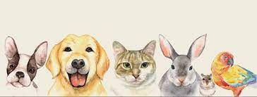
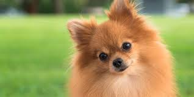
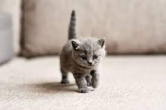
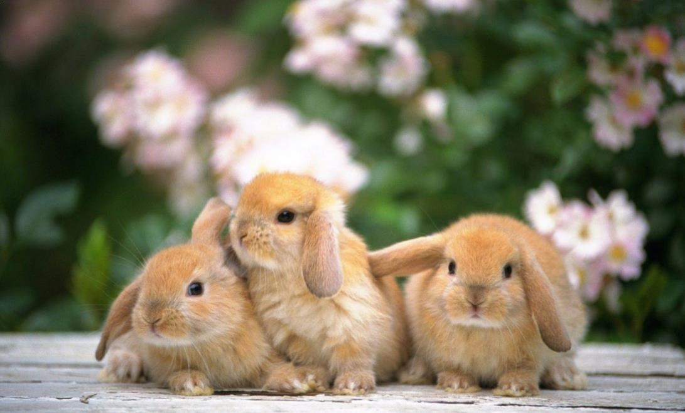
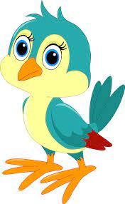

Anjing adalah hewan pemangsa dan hewan pemakan bangkai, memiliki gigi tajam dan rahang yang kuat untuk menyerang, menggigit, dan mencabik-cabik makanan. Ciri-ciri khas dari moyang serigala masih bertahan pada anjing, walaupun penangkaran secara selektif telah berhasil mengubah bentuk fisik berbagai jenis anjing ras.
Kucing disebut juga kucing domestik atau kucing rumah (nama ilmiah: Felis silvestris catus atau Felis catus) adalah sejenis mamalia karnivora dari keluarga Felidae. Kata "kucing" biasanya merujuk kepada "kucing" yang telah dijinakkan, tetapi bisa juga merujuk kepada "kucing besar" seperti singa dan harimau.
Kelinci adalah hewan mamalia dari famili Leporidae, yang dapat ditemukan di banyak bagian bumi. Kelinci berkembang biak dengan cara beranak yang disebut vivipar. Dulunya, hewan ini adalah hewan liar yang hidup di Afrika hingga ke daratan Eropa. Pada perkembangannya, tahun 1912, kelinci diklasifikasikan dalam ordo Lagomorpha. Ordo ini dibedakan menjadi dua famili, yakni Ochtonidae (jenis pika yang pandai bersiul) dan Leporidae (termasuk di dalamnya jenis kelinci dan terwelu). Asal kata kelinci berasal dari bahasa Belanda, yaitu konijntje yang berarti "anak kelinci". Hal ini menunjukkan bahwa masyarakat Nusantara mulai mengenali kelinci saat masa kolonial, padahal di Pulau Sumatra ada satu spesies asli kelinci sumatera (Nesolagus netscheri) yang baru ditemukan pada tahun 1972.
Burung adalah anggota kelompok hewan bertulang belakang (vertebrata) yang memiliki bulu dan sayap. Jenis-jenis burung begitu bervariasi, mulai dari burung kolibri yang kecil dan dapat mengepakkan sayap dengan sangat cepat, penguin yang menyelam dengan sayapnya, hingga burung unta, yang lebih tinggi dari manusia. Sebagian besar spesies burung di dunia mampu terbang menggunakan sayapnya (mis. bebek, angsa, burung gereja, pelikan, burung hantu, elang, cenderawasih, dan masih banyak lagi), kecuali beberapa jenis burung yang biasanya endemik di tempat tertentu, seperti burung unta, moa, kasuari, kiwi, penguin, dan sebagainya. Diperkirakan terdapat sekitar 8.800 – 10.200 spesies burung di seluruh dunia; sekitar 1.500 jenis di antaranya ditemukan di Indonesia. Berbagai jenis burung ini secara ilmiah digolongkan ke dalam kelas Aves.
NIM : 10121117
Nama: Kemal Abdul Aziz
Kelas: IF 3